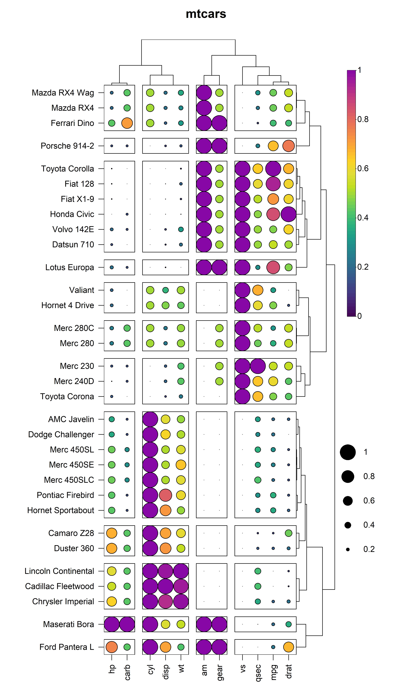

HeatmapR it a lightweight R package that makes it easy to generate high quality, complex heatmaps with minimal data preprocessing or manual customization. Visit the HeatmapR website to get started https://dillonhammill.github.io/HeatmapR/.
Overview
As the dimensionality of datasets continues to increase there is a need for visualisation tools such as heatmaps to present data in an easily interpretable way. The construction of complex heatmaps poses a number of challenges as they are composed multiple graphical elements, such as a coloured matrix, dendrograms, cluster sub-divisions, axes, titles and legends. The first base graphics implementation of heatmaps included heatmap() in the stats package and heatmap.2() in the gplots. The packages attempt to solve these graphical challenges by treating each graphical component as a separate plot element and arranging them using layout(). This approach can generate complex heatmaps but it rendered users unable to arrange the heatmap with additional plot elements. HeatmapR aims to address these layout issues using solely a base graphics approach.
HeatmapR
HeatmapR has a number of benefits over other heatmap packages:
-
HeatmapR is built using base graphics to remove the need for familiarity with
ggplot2orplotly. - HeatmapR is extremely lighweight and therefore there are no external dependencies that need to be installed.
- HeatmapR is designed under ROpenSci naming guidelines for a consistent and intuitive user experience.
- Unlike other heatmap packages that use base graphics, HeatmapR actually returns the plot object instead of an image. This makes it easy to arrange multiple plots in complex layouts without sacrificing resolution.
-
HeatmapR is fully customizable and comes with useful saving API (
heat_map_save()) to export high resolution images. - HeatmapR handles datasets that contain non-numeric or missing data, which means you don’t have to spend ages formatting and pre-processing the data beforehand.
- HeatmapR generates publication ready images with minimal manual customization, making it ideal for users that have limited coding experience.
Installation
HeatmapR can be installed directly from GitHub:
devtools::install_github("DillonHammill/HeatmapR")Usage
Creating heatmaps is as easy as loading HeatmapR and supplying your dataset to the heat_map() function. For details on customising your heatmaps, refer to the package vignette.
library(HeatmapR)
heat_map(
mtcars,
scale = "column",
scale_method = "range",
tree_x = TRUE,
tree_y = TRUE,
tree_cut_x = 4,
tree_cut_y = 12,
cell_size = TRUE,
cell_shape = "circle",
title = "mtcars"
)
Acknowledgements
HeatmapR relies on statistical methods in the stats package to compute distance matrices and perform hierarchical clustering. HeatmapR also uses some modified stats code from the ggdendro package to get the co-ordinates for the dendrogram line segments.
Code of Conduct
Please note that the HeatmapR project is released with a Contributor Code of Conduct. By contributing to this project, you agree to abide by its terms.
Citation
If you use HeatmapR for your work please cite the package as follows:
citation("HeatmapR")
#> To cite package 'HeatmapR' in publications use:
#>
#> Hammill D (2026). _HeatmapR: Create Heatmaps Using Base Graphics_. R
#> package version 1.1.0, <https://dillonhammill.github.io/HeatmapR/>.
#>
#> A BibTeX entry for LaTeX users is
#>
#> @Manual{,
#> title = {HeatmapR: Create Heatmaps Using Base Graphics},
#> author = {Dillon Hammill},
#> year = {2026},
#> note = {R package version 1.1.0},
#> url = {https://dillonhammill.github.io/HeatmapR/},
#> }